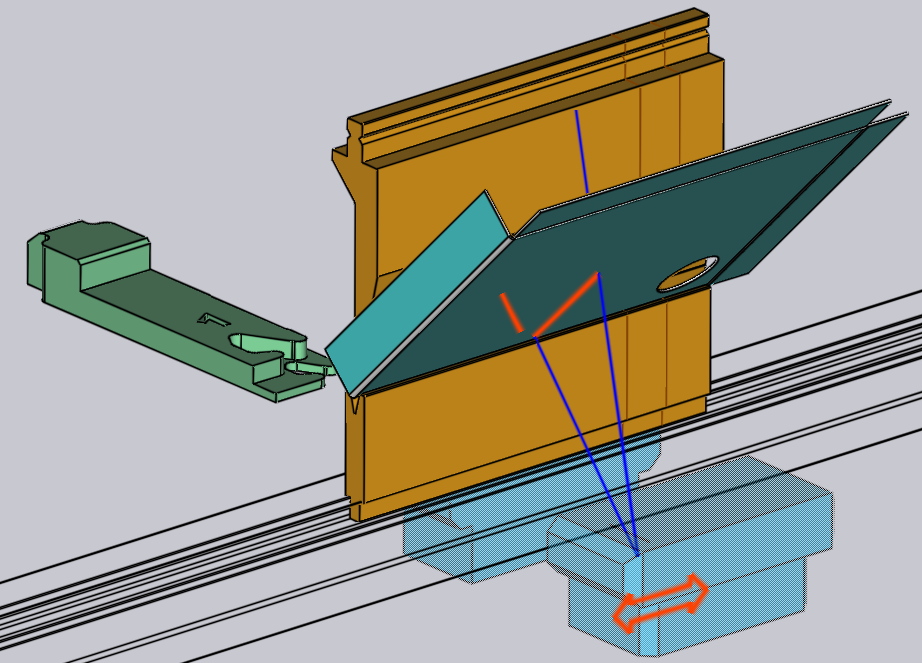

Redigér vinkelmåling
Hvis afkantningsmaskinen er konfigureret med vinkelmålingssystemer såsom ACB eller LCB, vil TecZone Bend bruge dem til at forbedre nøjagtigheden af bukningsvinkler. Siden Vinkelmåling forklarer mere om denne proces.
Denne side forklarer de tilgængelige redigeringsarbejder, når en vinkelmåling baseret på laser bruges. Hvis der anvendes et målesystem baseret på føleskive, kan disse indstillinger redigeres ved blot at klikke på stansemonteringen indeholdende føleskivesegmentet.
Redigering af laser-ACB
ACB-panelet kan åbnes, hvor ACB-indstillingerne redigeres på en af disse måder:
-
Klik to gange på et bukningsnummer i navigatoren for at åbne bukningspanelet, og klik derefter på knappen Angle Measure (denne vises kun, hvis maskinen har et vinkelmålesystem konfigureret).
-
Klik på en hvilken som helst celle i rækken ACB i navigatoren.
-
Klik på en af ACB-sensorerne, hvis de er synlige (se billedet nedenfor).
Under simuleringen vises ACB-sensorerne, når de kommer ind i målepositionen og afbilder delen. De faktiske laserlinjer som afbildet af kameraet projiceres på delen (i orange). Disse linjer vises og opdateres også i realtid, når sensorpositionerne interaktivt redigeres. Under interaktiv redigering vises der nogle anmærkninger som disse, hvis musen bevæges hen over forreste eller bageste sensor:

De orange spor på pladen angiver de faktiske, tilgængelige sporlængder. Man kan klikke på sensoren og trække den, og linjerne opdateres straks (under hensyntagen til huller, formationer, skygge af matricer eller målere). De blå linjer angiver de øverste og nederste grænser for laserscanningen (disse vises kun, så længe musen er over en af forreste eller bageste sensorer).
ACB-panel
Billedet ved siden af viser et typisk display fra ACB-panelet.
-
Vælgeren System muliggør skift mellem laser- og diskmålesystemer og vises kun, hvis maskinen har begge systemer installeret.
-
Tilstanden Mode er en af de identifikationstilstande, der behandles i afsnittet ovenfor, om ACB-metoder.
-
På listen Lasers kan det vælges, om begge lasere skal bruges til målingen (standarden). I nogle tilfælde kan man beslutte kun at bruge de forreste eller bageste lasere. Optionen Begge (skrå) på denne liste bruges, når begge lasere skal bruges, men der er behov for at positionere de forreste og bageste lasere separat (se billede nedenfor).
-
Indgangen Position indstiller Z-positionen til lasermåling (i maskinkoordinater). Når dette ændres, ses ACB-sensoren bevæge sig, laserspor genberegnes, og muligvis vil nogle advarsler og fejl relateret til sporlængden vises/forsvinde i navigatoren, alt sammen i realtid.
-
Displayet Trace viser det laserspor, der er tilgængeligt til måling. Generelt kan de forreste og bageste spor variere i længden; dette viser minimum.
-
Indstillingen Move to measure kontrollerer , hvornår ACB-lasersensorerne bevæger sig til målepositionen. Typisk bevæger de sig i position under fasen_trinskift_ (når der skiftes fra den tidligere bukning til denne), men nogle gange kan det gøre det svært at ilægge delen. I dette tilfælde kan det vælges at lade sensorerne bevæge sig på plads kun når stansen har nået stilstandspunktet ved starten af bukningen.
-
Indstillingen After measure styrer, hvor ACB-lasersensorerne flytter til, når målingen er fuldført. Hvis sensorerne ikke længere skal bruges, vender de typisk tilbage til deres parkeringsposition, og hvis de er nødvendige til efterfølgende bukninger, forbliver de i deres nuværende position
ACB-kvalitetsindstillinger
-
Indstillingerne Warning og Error er tærskler. Hvis den målte vinkelafvigelse overstiger disse værdier, viser controlleren advarsler eller fejl til operatøren.
-
Metoden ACB Speed fremskynder produktionen af flere dele i rækkefølge, da den kun måler tilbagefjedring én gang på første del og genbruger den samme værdi for alle efterfølgende dele. ACB-hastighed kan aktiveres eller deaktiveres separat for hver bukning.

Panelet ovenfor viser kun én måling (bukkekantens længde var for kort til tillade flere målinger). Hvis bukkekantens længde er længere, vil TecZone Bend bruge flere målinger. Der kan eventuelt ses et display som det ved siden af:
-
I dette eksempel har vi sat Lasers indstillingen til Begge (Skrå),og således opdeles Position indgangen for at vise separate Front og Rear positioner.
-
Indgangen Measures antal målinger, der skal tages; er indstillet til den optimale værdi beregnet af TecZone Bend (baseret på bukningslængde). I dette eksempel har TecZone Bend valgt at lave 3 målinger, men det kan reduceres helt ned til 1.
-
Skyderegulatoren Index bruges til at vælge en af de 3 målinger, der skal redigeres. Når denne skyderegulator flyttes, vises den korresponderende position i forreste og bageste indtastningsfelter og kan redigeres. Simuleringen flytter også sensoren til den tilsvarende måleposition.